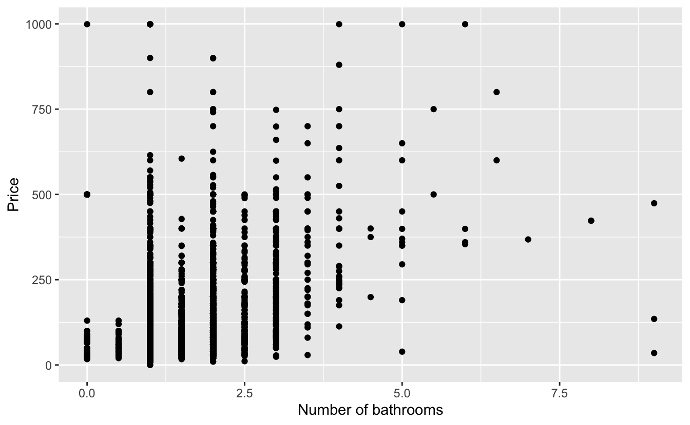

library(tidyverse)Importing data
Data tidying and importing
Reading rectangular data into R
Reading delimited files
read_csv()- comma delimited filesread_csv2()- semicolon separated files (common in countries where , is used as the decimal place)read_tsv()- tab delimited filesread_delim()- reads in files with any delimiterread_fwf()- fixed width files- …
Reading Excel spreadsheets
library(readxl)read_excel()- read xls or xlsx files- …
Reading and writing CSV files
Reading data
nobel <- read_csv(file = "data/nobel.csv")Rows: 1000 Columns: 19
── Column specification ────────────────────────────────────
Delimiter: ","
chr (17): first_name, last_name, born, died, born_countr...
dbl (2): id, year
ℹ Use `spec()` to retrieve the full column specification for this data.
ℹ Specify the column types or set `show_col_types = FALSE` to quiet this message.Reading data
nobel# A tibble: 1,000 × 19
id first_name last_name born died born_country
<dbl> <chr> <chr> <chr> <chr> <chr>
1 160 Jacobus H. van 't Hoff 1852… 3/1/… the Netherl…
2 569 Sully Prudhomme 1839… 9/7/… France
3 293 Emil von Behring 1854… 3/31… Prussia (no…
4 462 Henry Dunant 1828… 10/3… Switzerland
5 1 Wilhelm Conrad Röntgen 1845… 2/10… Prussia (no…
6 463 Frédéric Passy 1822… 6/12… France
7 464 Élie Ducommun 1833… 12/7… Switzerland
8 465 Albert Gobat 1843… 3/16… Switzerland
9 294 Ronald Ross 1857… 9/16… India
10 161 Emil Fischer 1852… 7/15… Prussia (no…
# ℹ 990 more rows
# ℹ 13 more variables: born_country_code <chr>,
# born_city <chr>, died_country <chr>,
# died_country_code <chr>, died_city <chr>, gender <chr>,
# year <dbl>, category <chr>, overall_motivation <chr>,
# motivation <chr>, organization_name <chr>,
# organization_city <chr>, organization_country <chr>Writing data
Write a file:
Reading data back
Read it back in to inspect:
read_csv("data/df.csv")Rows: 3 Columns: 2
── Column specification ────────────────────────────────────
Delimiter: ","
chr (1): y
dbl (1): x
ℹ Use `spec()` to retrieve the full column specification for this data.
ℹ Specify the column types or set `show_col_types = FALSE` to quiet this message.# A tibble: 3 × 2
x y
<dbl> <chr>
1 1 a
2 2 b
3 3 c Suppressing messages
```{r}
#| message: false
read_csv("data/df.csv")
```# A tibble: 3 × 2
x y
<dbl> <chr>
1 1 a
2 2 b
3 3 c Variable names
Data with bad names
edibnb_bad_names <- read_csv("data/edibnb-bad-names.csv")
names(edibnb_bad_names) [1] "ID" "Price"
[3] "neighbourhood" "accommodates"
[5] "Number of bathrooms" "Number of Bedrooms"
[7] "n beds" "Review Scores Rating"
[9] "Number of reviews" "listing_url" . . .
… but R doesn’t allow spaces in variable names
ggplot(
edibnb_bad_names,
aes(x = Number of bathrooms, y = Price)
) +
geom_point()Error: <text>:3:18: unexpected symbol
2: edibnb_bad_names,
3: aes(x = Number of
^Option 1 - Quote column names
ggplot(
edibnb_bad_names,
aes(x = `Number of bathrooms`, y = Price)
) +
geom_point()
Option 2 - Define column names
. . .
names(edibnb_col_names) [1] "id" "price"
[3] "neighbourhood" "accommodates"
[5] "bathroom" "bedroom"
[7] "bed" "review_scores_rating"
[9] "n_reviews" "url" Option 3 - Format column names to snake_case
library(janitor)
edibnb_clean_names <- read_csv("data/edibnb-bad-names.csv") |>
janitor::clean_names(). . .
names(edibnb_clean_names) [1] "id" "price"
[3] "neighbourhood" "accommodates"
[5] "number_of_bathrooms" "number_of_bedrooms"
[7] "n_beds" "review_scores_rating"
[9] "number_of_reviews" "listing_url" Variable types
Variable types
Which type is x? Why?

read_csv("data/df-na.csv")# A tibble: 9 × 3
x y z
<chr> <chr> <chr>
1 1 a hi
2 <NA> b hello
3 3 Not applicable 9999
4 4 d ola
5 5 e hola
6 . f whatup
7 7 g wassup
8 8 h sup
9 9 i <NA> Option 1. Explicit NAs
read_csv(
"data/df-na.csv",
na = c("", "NA", ".", "9999", "Not applicable")
)# A tibble: 9 × 3
x y z
<dbl> <chr> <chr>
1 1 a hi
2 NA b hello
3 3 <NA> <NA>
4 4 d ola
5 5 e hola
6 NA f whatup
7 7 g wassup
8 8 h sup
9 9 i <NA>
Option 2. Specify column types
read_csv(
"data/df-na.csv",
col_types = list(col_double(), col_character(), col_character())
)Warning: One or more parsing issues, call `problems()` on your data
frame for details, e.g.:
dat <- vroom(...)
problems(dat)# A tibble: 9 × 3
x y z
<dbl> <chr> <chr>
1 1 a hi
2 NA b hello
3 3 Not applicable 9999
4 4 d ola
5 5 e hola
6 NA f whatup
7 7 g wassup
8 8 h sup
9 9 i <NA>
Column types for read_csv()
| type function | data type |
|---|---|
col_character() |
character |
col_date() |
date |
col_datetime() |
POSIXct (date-time) |
col_double() |
double (numeric) |
col_factor() |
factor |
col_guess() |
let readr guess (default) |
col_integer() |
integer |
col_logical() |
logical |
col_number() |
numbers mixed with non-number characters |
col_numeric() |
double or integer |
col_skip() |
do not read |
col_time() |
time |
Reading Excel spreadsheets
Reading data
nobel <- read_excel(path = "data/nobel.xlsx"). . .
nobel# A tibble: 1,000 × 19
id first_name last_name born died
<dbl> <chr> <chr> <chr> <dttm>
1 160 Jacobus H. van 't Ho… 1852… 1911-03-01 00:00:00
2 569 Sully Prudhomme 1839… 1907-09-07 00:00:00
3 293 Emil von Behri… 1854… 1917-03-31 00:00:00
4 462 Henry Dunant 1828… 1910-10-30 00:00:00
5 1 Wilhelm Conrad Röntgen 1845… 1923-02-10 00:00:00
6 463 Frédéric Passy 1822… 1912-06-12 00:00:00
7 464 Élie Ducommun 1833… 1906-12-07 00:00:00
8 465 Albert Gobat 1843… 1914-03-16 00:00:00
9 294 Ronald Ross 1857… 1932-09-16 00:00:00
10 161 Emil Fischer 1852… 1919-07-15 00:00:00
# ℹ 990 more rows
# ℹ 14 more variables: born_country <chr>,
# born_country_code <chr>, born_city <chr>,
# died_country <chr>, died_country_code <chr>,
# died_city <chr>, gender <chr>, year <dbl>,
# category <chr>, overall_motivation <chr>,
# motivation <chr>, organization_name <chr>, …Spreadsheets with “bad” names
edibnb_bad_names <- read_excel("data/edibnb-bad-names.xlsx")
names(edibnb_bad_names) [1] "ID" "Price"
[3] "neighbourhood" "accommodates"
[5] "Number of bathrooms" "Number of Bedrooms"
[7] "n beds" "Review Scores Rating"
[9] "Number of reviews" "listing_url" Option 1. Define column names
edibnb_col_names <- read_excel(
"data/edibnb-bad-names.xlsx",
col_names = c(
"id", "price", "neighbourhood", "accommodates", "bathroom",
"bedroom", "bed", "review_scores_rating", "n_reviews", "url"
)
)
names(edibnb_col_names) [1] "id" "price"
[3] "neighbourhood" "accommodates"
[5] "bathroom" "bedroom"
[7] "bed" "review_scores_rating"
[9] "n_reviews" "url" Option 2. Format column names to snake_case
edibnb_clean_names <- read_excel("data/edibnb-bad-names.xlsx") |>
janitor::clean_names()
names(edibnb_clean_names) [1] "id" "price"
[3] "neighbourhood" "accommodates"
[5] "number_of_bathrooms" "number_of_bedrooms"
[7] "n_beds" "review_scores_rating"
[9] "number_of_reviews" "listing_url" Spreadsheets with NAs
read_excel("data/df-na.xlsx")# A tibble: 9 × 3
x y z
<chr> <chr> <chr>
1 1 a hi
2 NA b hello
3 3 Not applicable 9999
4 4 d ola
5 5 e hola
6 . f whatup
7 7 g wassup
8 8 h sup
9 9 i <NA> Option 1. Explicit NAs
Option 2. Specify column types
Warning: Expecting numeric in A3 / R3C1: got 'NA'Warning: Expecting numeric in A7 / R7C1: got '.'# A tibble: 9 × 3
x y z
<dbl> <chr> <chr>
1 1 a hi
2 NA b hello
3 3 Not applicable 9999
4 4 d ola
5 5 e hola
6 NA f whatup
7 7 g wassup
8 8 h sup
9 9 i <NA> Column types for read_excel()
| type function | data type |
|---|---|
"skip" |
do not read |
"guess" |
let readxl guess (default) |
"logical" |
logical |
"numeric" |
numeric |
"date" |
POSIXct (date-time) |
"text" |
character |
"list" |
a list of length 1 vectors |
Other types of data
Other types of data
- googlesheets4: Google Sheets
- arrow: parquet files
- DBI, along with a database specific backend (e.g. RMySQL, RSQLite, RPostgreSQL etc): allows you to run SQL queries against a database and return a data frame
- rvest: web scraping
- haven: SPSS, Stata, and SAS files
- jsonline: JSON
- xml2: xml
- httr: web APIs
- sparklyr: data loaded into spark